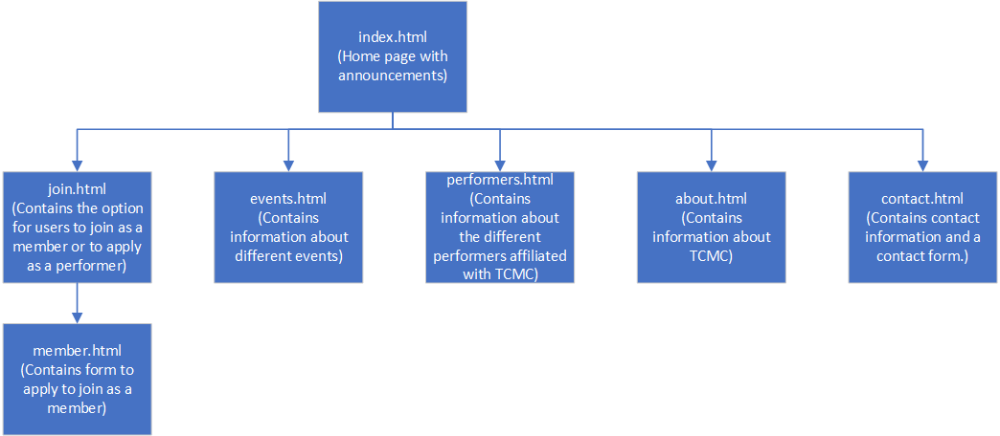

CP1406 - Project Plan
Name: Abel Lim Wee Kiat
Studentweb URL:
Goals
This website should fulfil the following conditions for Townsvile Community Music Centre (TCMC).
- Increase membership and community participation.
- Increase ticket sales to the general public.
- Encourage performers to participate in concerts encouraged and covered by TCMC.
- Increase engagement of members in activities. (e.g. volunteering for administration, organising and promoting concerts and workshops)
- Encourage performers to let us organise a concert for them.
- Encourage performers to cooperate with promotion, photo shoots, media releases, etc.
Success Evaluation
For the website to be a success, it must fulfil the following criteria over three months after the website is implemented. For the sake of a controlled evaluation, all other methods of advetisment should not change during this period.
- The number of member signups during this period should be at least 20% higher then the previous three months.
- The number of ticket sales to non members during this period should be at least 20% higher then the previous three months.
- The number of performers applying for concerts to be organised by TCMC in this period should increase by at least 20%.
Target Audience
The target audeience of the site will be adults with an interest in live performance music and/or adult performers. To cater to them, the site will be designed with "mellow" being the core theme. The site should promote the idea of attending musical concerts as a method of relaxing and culturally enriching themselves (and their families).
Content
- Home page (contains announcements)
- Join us (contains selection to choose between the following)
- Join as a member
- Join as a performer
- Upcoming events (contains information about upcoming concerts. Includes links to ticket sales)
- Gallery (contains pictures and videos of past events)
- About us (contains general information about TCMC, history, people and contact information)
Site Flowchart

Comps
provide links here to your 2 comps (images or Web pages)
Developed Pages
provide a link here to your developed pages